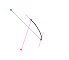
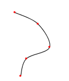
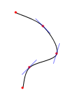
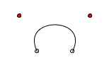
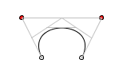
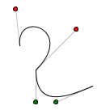
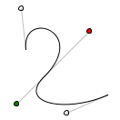

Download the files from this tutorial.
|
This tutorial is for Processing version 1.0+. If you see any errors or have comments, please let us know. This tutorial introduces you to the three types of curves in Processing: arcs, spline curves, and Bézier curves. ArcsArcs are the simplest curves to draw. Processing defines an arc as a section of an ellipse. You call the function with these parameters: arc(x, y, width, height, start, stop);
The first four parameters are the same as the ones for void setup()
{
size(300, 200);
background(255);
smooth();
rectMode(CENTER); // show bounding boxes
stroke(128);
rect(35, 35, 50, 50);
rect(105, 35, 50, 50);
rect(175, 35, 50, 50);
rect(105, 105, 100, 50);
stroke(0);
arc(35, 35, 50, 50, 0, PI / 2.0); // lower quarter circle
arc(105, 35, 50, 50, -PI, 0); // upper half of circle
arc(175, 35, 50, 50, -PI / 6, PI / 6); // 60 degrees
arc(105, 105, 100, 50, PI / 2, 3 * PI / 2); // 180 degrees
}
Spline Curves
Arcs are fine, but they’re plain. The next function,
curve(cpx1, cpy1, x1, y1, x2, y2, cpx2, cpy2);
Here is an example that shows a void setup()
{
size(200, 200);
background(255);
smooth();
stroke(0);
curve(40, 40, 80, 60, 100, 100, 60, 120);
noStroke();
fill(255, 0, 0);
ellipse(40, 40, 3, 3);
fill(0, 0, 255, 192);
ellipse(100, 100, 3, 3);
ellipse(80, 60, 3, 3);
fill(255, 0, 0);
ellipse(60, 120, 3, 3);
}
 How do the control points affect the way the curve looks? Take a deep breath, because this is somewhat complicated.
The only way to understand this better is to play with it. Here is an applet that lets you do just that. Continous Spline Curves
In isolation, a single Here is a curve connecting the points (40, 40), (80, 60), (100, 100), (60, 120), and (50, 150). In common usage, people use the first point of the curve as the first control point and the last point of the curve as the last control point. The lower diagram shows the tangents at the intermediate points.

 void setup()
{
int[ ] coords = {
40, 40, 80, 60, 100, 100, 60, 120, 50, 150
};
int i;
size(200, 200);
background(255);
smooth();
noFill();
stroke(0);
beginShape();
curveVertex(40, 40); // the first control point
curveVertex(40, 40); // is also the start point of curve
curveVertex(80, 60);
curveVertex(100, 100);
curveVertex(60, 120);
curveVertex(50, 150); // the last point of curve
curveVertex(50, 150); // is also the last control point
endShape();
// use the array to keep the code shorter;
// you already know how to draw ellipses!
fill(255, 0, 0);
noStroke();
for (i = 0; i < coords.length; i += 2)
{
ellipse(coords[i], coords[i + 1], 3, 3);
}
}
Bézier Curves
Though better than arcs, spline curves don’t seem to have those
graceful, swooping curves that say “art.” For those,
you need to draw Bézier curves with the
bezier(x1, y1, cpx1, cpy1, cpx2, cpy2, x2, y2);
Here is a program that displays a Bézier curve and its control points. 
void setup( )
{
size(150, 150);
background(255);
smooth();
ellipse(50, 75, 5, 5); // endpoints of curve
ellipse(100, 75, 5, 5);
fill(255, 0, 0);
ellipse(25, 25, 5, 5); // control points
ellipse(125, 25, 5, 5);
noFill();
stroke(0);
bezier(50, 75, 25, 25, 125, 25, 100, 75);
}

While it is difficult to visualize how the control points affect a
Again, the only way to understand this better is to play with it. Here is an applet that lets you do just that. Continous Bézier Curves
Just as bezierVertex(cpx1, cpy1, cpx2, cpy2, x, y);
So, to draw the previous example using void setup( )
{
size(150, 150);
background(255);
smooth();
// don't show where control points are
noFill();
stroke(0);
beginShape();
vertex(50, 75); // first point
bezierVertex(25, 25, 125, 25, 100, 75);
endShape();
}
 Here is a continuous Bézier curve, but it doesn’t join smoothly. The diagram shows the control points, but only the relevant code for drawing the curve is here. beginShape(); vertex(30, 70); // first point bezierVertex(25, 25, 100, 50, 50, 100); bezierVertex(50, 140, 75, 140, 120, 120); endShape();  In order to make two curves A and B smoothly continuous, the last control point of A, the last point of A, and the first control point of B have to be on a straight line. Here is an example that meets those conditions. The points that are in a line are shown in bold. beginShape(); vertex(30, 70); // first point bezierVertex(25, 25, 100, 50, 50, 100); bezierVertex(20, 130, 75, 140, 120, 120); endShape(); Summary
|